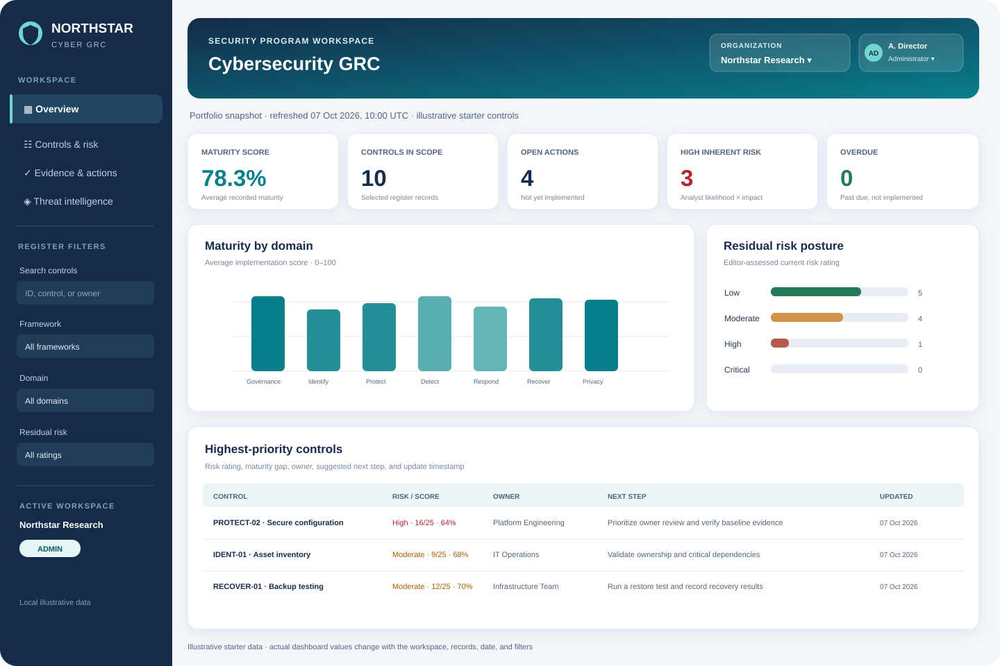
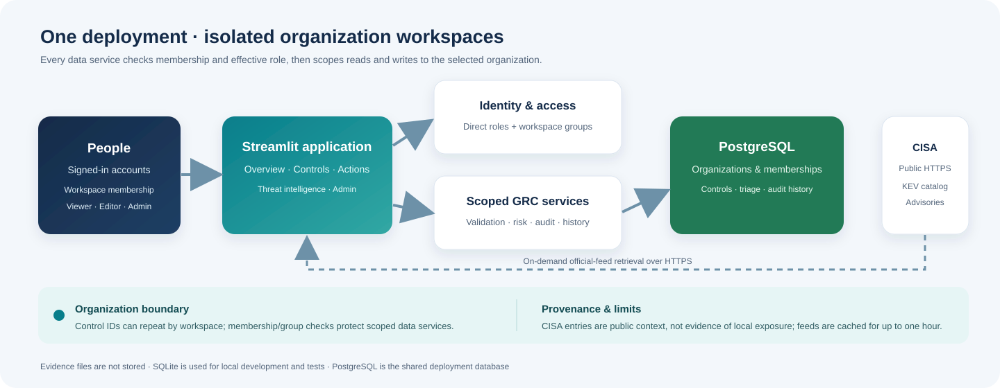

01 · Executive summary
Northstar brings organization-isolated control registers, role-aware access, risk visibility, remediation tracking, and public threat context into one small-team deployment. Each workspace can manage its own members, groups, control history, audit events, and vulnerability triage.
Illustrative starter records reference NIST CSF 2.0, ISO 27001 Annex A, NIS2, and GDPR. They are examples, not authoritative framework mappings. The design targets fewer than 1,000 registered users; this is not a measured capacity or service-level guarantee.

02 · Architecture & component responsibilities
The browser connects to the Streamlit application. The app authenticates a named account, verifies active membership in the selected organization, computes the effective direct/group role, validates submitted fields, and runs organization-scoped SQLAlchemy operations. PostgreSQL is the shared Docker Compose database; local SQLite supports development and tests.

| Component | Responsibility |
|---|---|
app.py | Sign-in, first-admin setup, filters, metrics, register forms, exports, account administration, and audit display. |
security.py | Username/password validation, salted password hashing, password verification, and reusable permission predicates. |
store.py + Alembic | Versioned SQLAlchemy schema, database initialization, seeded examples, field validation, persistent CRUD, and audit events. |
risk_engine.py | Maturity aggregation, framework counts, risk summaries, and priority ordering. |
intelligence.py | Bounded HTTPS retrieval, validation, provenance, and parsing of CISA KEV/advisories. |
| PostgreSQL / SQLite | PostgreSQL is shared Compose storage; SQLite is the local development and test adapter. |
03 · Data model and tables
Alembic applies versioned schema migrations on application startup. An empty control table is seeded once with the illustrative register. Users are never seeded with a shared default password; the first administrator is created by a setup flow requiring an operator-configured bootstrap token.
| Table | Main columns | Purpose and safeguards |
|---|---|---|
users | Username, display name, password hash, global enabled state, forced-password-change flag, authorization version, created time | Global named account; passwords are salted hashes and workspaces use separate membership roles. |
organizations | ID, name, unique slug, created time | Workspace boundary for GRC records and organization access. |
organization_memberships | Organization ID, user ID, direct role, active flag, created time | One account may have a different direct role in each workspace. |
groups / group_memberships | Organization ID, group ID, name, viewer/editor role, user ID | Reusable workspace access; administrator cannot be granted by a group. |
controls | Organization ID + control ID, owner, status, maturity, likelihood, impact, residual risk, due date, evidence reference, notes, timestamps | Composite workspace/control key; database constraints and service validation protect data. |
control_history | Organization, control ID, actor, status, maturity, residual risk, recorded time | Tracks each control create/edit event; it is not a daily portfolio snapshot. |
audit_log | Organization, actor, action, entity, details, created time | Application event history shown to administrators in that workspace; not tamper-proof. |
threat_triage | Organization + CVE, status, notes, updater, timestamp | Organization-specific analyst follow-up, distinct from shared public CISA source data. |
app_settings / alembic_version | Setting key/value; current schema revision | Per-workspace starter-data marker and versioned migration metadata. |
04 · Least-privilege access model
Every authenticated action is associated with a named user and an active workspace. Direct membership roles combine with group grants using the higher permission; administrator access must be direct. Administrators can change workspace roles or deactivate memberships when need ends.
| Capability | Viewer | Editor | Administrator |
|---|---|---|---|
| View filtered dashboard and control register | Yes | Yes | Yes |
| Export filtered register to CSV | Yes | Yes | Yes |
| Create or update control records | No | Yes | Yes |
| Delete control records | No | No | Yes |
| Create, change, or deactivate user accounts | No | No | Yes |
| Create groups and manage group membership | No | No | Yes |
| Create organizations and add workspace members | No | No | Yes |
| Read the application audit history | No | No | Yes |
Groups can grant viewer/editor access, never administrator. A workspace must retain one active directly assigned administrator. Passwords require at least 12 characters and are stored as PBKDF2-HMAC-SHA-256 hashes with a random 16-byte salt and 600,000 iterations. There is no default account. New accounts and administrator-reset accounts must change their temporary password before opening the dashboard. Access changes increment an authentication version so sessions are rejected on their next request.
05 · Main workflows
06 · Scoring and interpretation
Control maturity
Average maturity = sum(status_score for selected controls) / count(selected controls) Inherent risk = likelihood (1–5) × impact (1–5)
The result is rounded to one decimal place. An empty selection reports 0.0. Each record's maturity score is an editor-entered value from 0 to 100; the application does not infer it from status text.
Inherent risk is an analyst estimate, with Low 1–4, Moderate 5–9, High 10–16, and Critical 17–25. It is not a probability. Residual risk remains a separate editor-entered rating.
Priority score
Priority = (risk severity index x 25) + (100 - status_score) Severity index: Low=0, Moderate=1, High=2, Critical=3
Higher values sort first. This transparent heuristic favors higher residual risk and lower maturity; it is not a quantitative likelihood-impact model. Suggested actions are deterministic domain guidance for human review. The overdue indicator counts controls whose due date is before today and whose status is not Implemented. Filters affect dashboard metrics and risk lists.
07 · Public threat intelligence
The Threat intelligence page fetches the official CISA Known Exploited Vulnerabilities (KEV) catalog and CISA cybersecurity-advisory RSS feed over HTTPS. It validates response sizes and expected data structure, displays source and retrieval time, and caches results in memory for up to one hour.
| Feed | What it provides | How Northstar uses it |
|---|---|---|
| CISA KEV JSON | Public catalog entries, vendor/product names, dates, required actions, and source notes. | Shows sorted catalog data as research context; workspace triage is saved separately. |
| CISA advisories RSS | Public advisory titles, publication times, and official links. | Displays recent official advisories with direct source links. |
Data is retrieved on demand, with a one-hour application cache. This is neither a push feed nor real-time detection; upstream availability and publication schedules are outside this application.
08 · Worked record example
Illustrative record from the starter register:
| Field | Example value | How the dashboard uses it |
|---|---|---|
| ID / control | PROTECT-02 · Secure configuration management | Unique register item shown in tables, audit events, and filters. |
| Domain / framework | Protect · NIS2 | Groups the control in domain maturity and framework coverage. |
| Owner / status | Platform Engineering · Partially implemented | Communicates accountability and implementation progress. |
| Maturity / inherent assessment | 64 / 100 · Likelihood 4 × impact 4 = 16 (High) | The 1–25 inherent score is an analyst-entered estimate, not an Internet-derived forecast. |
| Residual rating / priority | High · 86 | Priority = (2 × 25) + (100 − 64) = 86. |
| Due date / evidence | 2026-10-15 · Baseline hardening checklist and exceptions register | Supports remediation review and locates evidence outside this app. |
If this control is selected alone, the average maturity metric is 64.0%. Its due date is compared with the application server's current date for overdue status.
09 · Installation, deployment, and maintenance
Local development uses SQLite at ./data/grc_dashboard.db. Docker Compose starts one Streamlit service and one PostgreSQL 16 service with a persistent named volume. The app container runs as an unprivileged user and drops Linux capabilities. Compose binds the dashboard to 127.0.0.1:8501 by default. One deployment can hold multiple organization workspaces with scoped access and data.
Operational checklist
- Configure unique random values for
POSTGRES_PASSWORDandBOOTSTRAP_ADMIN_TOKENin an ignored local.env; do not commit secrets. - For remote users, front the service with TLS and a restricted reverse proxy; preserve Streamlit's XSRF protections.
- Back up PostgreSQL regularly, test restores, and protect backup files to the same standard as the database.
- Review administrator assignments and account status periodically; deactivate accounts no longer required.
- Review every workspace's direct members, effective group permissions, and active direct administrator.
- Back up before an application migration; verify migrated workspace data and test restore procedures.
- Monitor logs, database health, disk capacity, dependency/security advisories, and failed deployment health checks.
- Keep evidence files in an approved document-management system and enter only a safe reference in Northstar.
- Validate CISA catalog findings against local inventory; public listings are not proof of exposure.
Useful commands
docker compose up --build -d docker compose ps docker compose logs -f grc-dashboard docker compose exec -T database pg_dump -U grc_dashboard grc_dashboard > backup.sql
The deployment has one application process and no horizontal scaling, queue, cache, or dedicated monitoring service. Its target user count is a design goal, not a measured capacity promise; validate concurrency, backups, and recovery in the target hosting environment.
10 · Security model, risks, and limitations
| Concern | Current mitigation | Remaining responsibility |
|---|---|---|
| Unauthorized account access | Named accounts, salted hashes, session/version checks, bootstrap token. | Enforce TLS and network restrictions; no MFA or identity provider. |
| Cross-workspace disclosure | Membership and effective-role checks at service boundaries; scoped queries and composite control keys. | Review all future data services and protect database administrator access. |
| Over-privileged group | Groups may grant viewer/editor only; admin is direct; last direct administrator is protected. | Review role/group memberships routinely. |
| Unverified public vulnerability match | Official CISA provenance, retrieval timestamp, and separate analyst triage. | No local asset inventory/matching; validate products and versions manually. |
| Invalid writes / audit gaps | Parameterized operations, validation, constraints, transactional audit/history. | Audit remains editable by DB admins; no external immutable audit sink. |
| Loss or exposure of records | PostgreSQL persistent volume; Compose port is localhost-bound by default. | Configure encrypted backups, restore tests, storage controls, and production TLS. |
| Evidence leakage | Only a text reference is stored; no file upload functionality. | Use approved evidence storage; avoid secrets and sensitive data in notes. |
| Incorrect compliance conclusion | Risk model and sample mappings are explicitly decision support. | Validate applicability, evidence, and legal interpretations with qualified reviewers. |
Known gaps: no SSO/MFA, e-mail invitations or self-service recovery, distributed login rate limiting, evidence-file upload, immutable external audit export, local asset inventory/exposure matching, high availability, or load/performance test. Organization isolation is enforced in application data services, but all workspaces share one deployment and database. Review SECURITY.md and the threat model before deployment.
11 · Verification and acceptance criteria
The automated test suite covers score aggregation, tenant-isolated CRUD and triage, group role boundaries, fresh and legacy/partial migrations, feed validation, password lifecycle, administrator protection, audit/history, and CSV safety. CI additionally runs Ruff, Black, and a dependency audit.
| Acceptance area | Expected behavior |
|---|---|
| Persistence | Created and edited controls remain after app reruns/restarts using the configured shared database. |
| Least privilege | Viewer cannot edit; editor cannot delete or manage accounts; administrator can manage users and delete records. |
| Organization isolation | A workspace member can read or modify only records in active memberships; duplicate control IDs remain isolated. |
| Group access | Groups grant viewer/editor only; administrators must be direct workspace members. |
| Threat intelligence | CISA content is source-attributed; triage is workspace-specific and does not claim asset exposure. |
| Input and export safety | Invalid risk/status values, dates, scores, and required fields are rejected; formula-like text is neutralized in CSV exports. |
| Auditability | Control and account changes create an event with actor, action, entity, and timestamp. |
| First run | No default admin is created; setup remains locked without an operator-provided bootstrap token. |
| Reporting | Dashboard values and CSV data follow the selected filters. |
See the verification report for the commands actually run in the current workspace. A successful unit test run does not certify a hosting environment or establish a user-capacity guarantee.